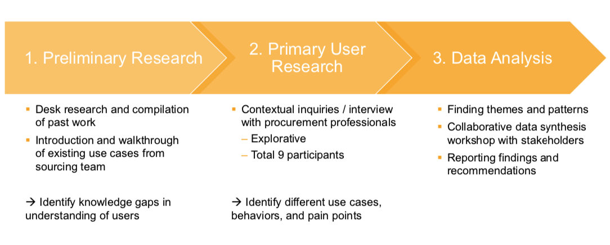
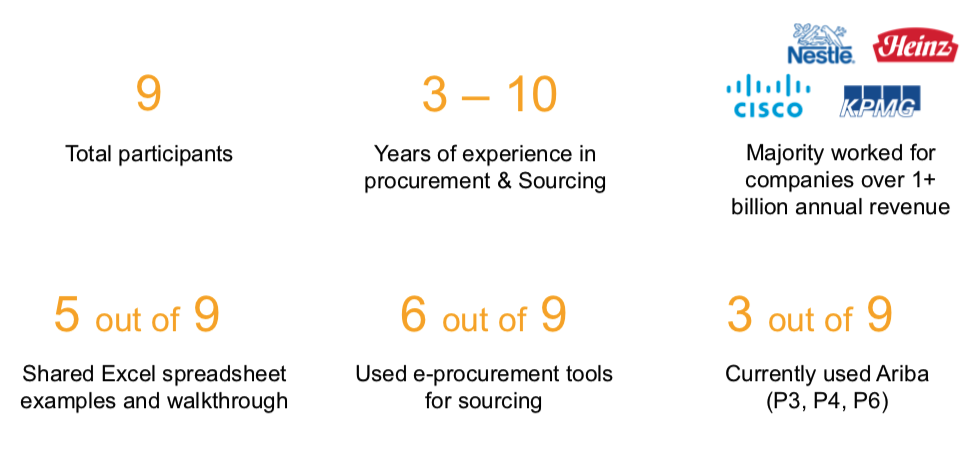
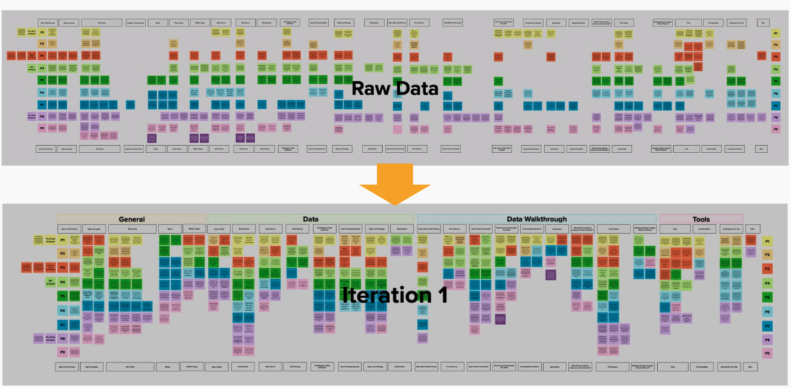
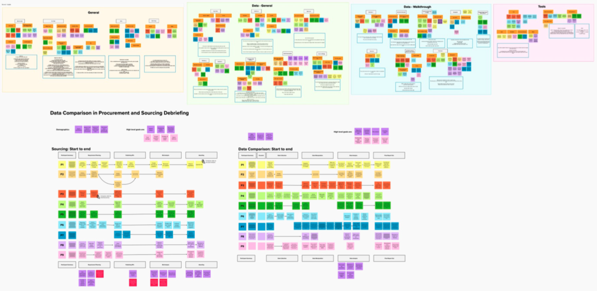
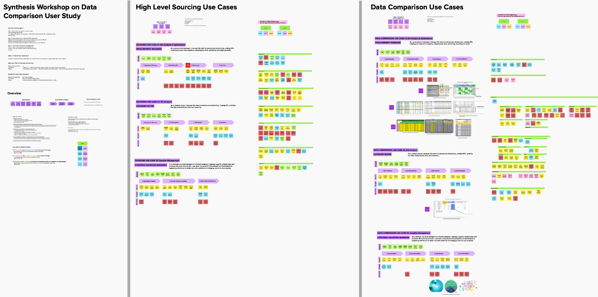
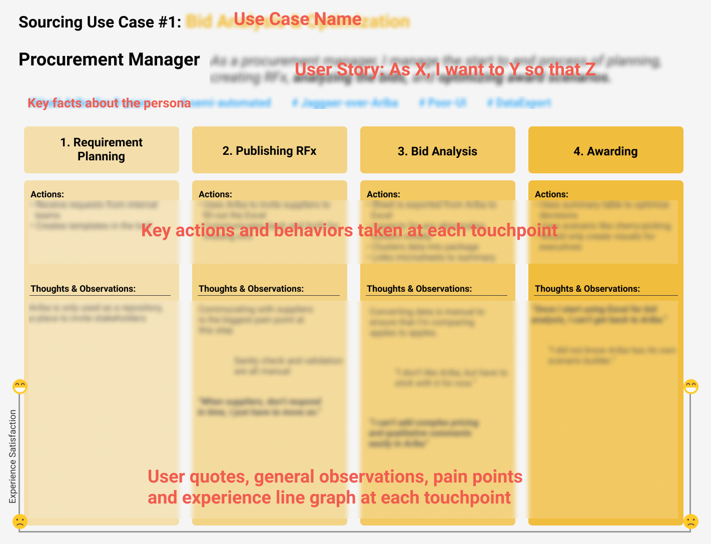

<!DOCTYPE html>
<html lang="en-us">

<head>

  <meta charset="utf-8">
  <meta name="viewport" content="width=device-width, initial-scale=1">
  <meta http-equiv="X-UA-Compatible" content="IE=edge">
  <meta name="generator" content="Source Themes Academic 4.5.0">

  

  
  
  
  
  
    
    
    
  
  

  <meta name="author" content="Jin Jeon">

  
  
  
    
  
  <meta name="description" content="Examined users&#39; data comparison habits as an initiative to actively integrate user research into SAP&#39;s design process">

  
  <link rel="alternate" hreflang="en-us" href="https://jinjeon.me/project/sap/">

  


  
  
  
  <meta name="theme-color" content="#2962ff">
  

  
  
  
  
    
    <link rel="stylesheet" href="https://cdnjs.cloudflare.com/ajax/libs/academicons/1.8.6/css/academicons.min.css" integrity="sha256-uFVgMKfistnJAfoCUQigIl+JfUaP47GrRKjf6CTPVmw=" crossorigin="anonymous">
    <link rel="stylesheet" href="https://cdnjs.cloudflare.com/ajax/libs/font-awesome/5.11.2/css/all.min.css" integrity="sha256-+N4/V/SbAFiW1MPBCXnfnP9QSN3+Keu+NlB+0ev/YKQ=" crossorigin="anonymous">
    <link rel="stylesheet" href="https://cdnjs.cloudflare.com/ajax/libs/fancybox/3.5.7/jquery.fancybox.min.css" integrity="sha256-Vzbj7sDDS/woiFS3uNKo8eIuni59rjyNGtXfstRzStA=" crossorigin="anonymous">

    
    
    
      
    
    
      
      
        
          <link rel="stylesheet" href="https://cdnjs.cloudflare.com/ajax/libs/highlight.js/9.15.10/styles/github.min.css" crossorigin="anonymous" title="hl-light">
          <link rel="stylesheet" href="https://cdnjs.cloudflare.com/ajax/libs/highlight.js/9.15.10/styles/dracula.min.css" crossorigin="anonymous" title="hl-dark" disabled>
        
      
    

    

    

  

  
  
  
  <link rel="stylesheet" href="https://fonts.googleapis.com/css?family=https://fonts.googleapis.com/css2?family=Open+Sans:wght@300&display=swap">
  

  
  
  
  
  <link rel="stylesheet" href="/css/academic.css">

  


  


  

  <link rel="manifest" href="/index.webmanifest">
  <link rel="icon" type="image/png" href="/img/icon-32.png">
  <link rel="apple-touch-icon" type="image/png" href="/img/icon-192.png">

  <link rel="canonical" href="https://jinjeon.me/project/sap/">

  
  
  
  
    
  
  
  <meta property="twitter:card" content="summary_large_image">
  
  <meta property="og:site_name" content="Jin Jeon">
  <meta property="og:url" content="https://jinjeon.me/project/sap/">
  <meta property="og:title" content="Generative research in procurement data comparison (NDA) | Jin Jeon">
  <meta property="og:description" content="Examined users&#39; data comparison habits as an initiative to actively integrate user research into SAP&#39;s design process"><meta property="og:image" content="https://jinjeon.me/project/sap/featured.png">
  <meta property="twitter:image" content="https://jinjeon.me/project/sap/featured.png"><meta property="og:locale" content="en-us">
  
    
      <meta property="article:published_time" content="2021-08-13T00:00:00&#43;00:00">
    
    <meta property="article:modified_time" content="2021-08-13T00:00:00&#43;00:00">
  

  


    


<script type="application/ld+json">
{
  "@context": "https://schema.org",
  "@type": "Article",
  "mainEntityOfPage": {
    "@type": "WebPage",
    "@id": "https://jinjeon.me/project/sap/"
  },
  "headline": "Generative research in procurement data comparison (NDA)",
  
  "image": [
    "https://jinjeon.me/project/sap/featured.png"
  ],
  
  "datePublished": "2021-08-13T00:00:00Z",
  "dateModified": "2021-08-13T00:00:00Z",
  
  "author": {
    "@type": "Person",
    "name": "Jin Jeon"
  },
  
  "publisher": {
    "@type": "Organization",
    "name": "Jin Jeon",
    "logo": {
      "@type": "ImageObject",
      "url": "https://jinjeon.me/img/icon.png"
    }
  },
  "description": "Examined users' data comparison habits as an initiative to actively integrate user research into SAP's design process"
}
</script>

  

  


  


  


  <title>Generative research in procurement data comparison (NDA) | Jin Jeon</title>

</head>

<body id="top" data-spy="scroll" data-offset="70" data-target="#TableOfContents" >

  <aside class="search-results" id="search">
  <div class="container">
    <section class="search-header">

      <div class="row no-gutters justify-content-between mb-3">
        <div class="col-6">
          <h1>Search</h1>
        </div>
        <div class="col-6 col-search-close">
          <a class="js-search" href="#"><i class="fas fa-times-circle text-muted" aria-hidden="true"></i></a>
        </div>
      </div>

      <div id="search-box">
        
        <input name="q" id="search-query" placeholder="Search..." autocapitalize="off"
        autocomplete="off" autocorrect="off" spellcheck="false" type="search">
        
      </div>

    </section>
    <section class="section-search-results">

      <div id="search-hits">
        
      </div>

    </section>
  </div>
</aside>


  
<nav class="navbar navbar-light fixed-top navbar-expand-lg py-0 compensate-for-scrollbar" id="navbar-main">
  <div class="container">

    
      <a class="navbar-brand" href="/"></a>
      
      <button type="button" class="navbar-toggler" data-toggle="collapse"
              data-target="#navbar" aria-controls="navbar" aria-expanded="false" aria-label="Toggle navigation">
        <span><i class="fas fa-bars"></i></span>
      </button>
      

    
    <div class="collapse navbar-collapse" id="navbar">

      
      
      <ul class="navbar-nav mr-auto">
        

        

        
        
        
          
        

        
        
        
        
        
        
          
          
          
            
          
          
        

        <li class="nav-item">
          <a class="nav-link " href="/#projects"><span>Projects</span></a>
        </li>

        
        

        

        
        
        
          
        

        
        
        
        
        
        
          
          
          
            
          
          
        

        <li class="nav-item">
          <a class="nav-link " href="/#about"><span>About Me</span></a>
        </li>

        
        

        

        
        
        
          
        

        
        
        
        
        
        
          
          
          
            
          
          
        

        <li class="nav-item">
          <a class="nav-link " href="/#posts"><span>Posts</span></a>
        </li>

        
        

        

        
        
        
          
            
          
        

        
        
        
        
        
        

        <li class="nav-item">
          <a class="nav-link " href="/pdf/JinJeon_Resume.pdf" target="_blank" rel="noopener"><span>Resume</span></a>
        </li>

        
        

        

        
        
        
          
        

        
        
        
        
        
        
          
          
          
            
          
          
        

        <li class="nav-item">
          <a class="nav-link " href="/#contact"><span>Contact</span></a>
        </li>

        
        

        

        
        
        

        
        
        
        
        
        

        <li class="nav-item">
          <a class="nav-link  active" href="/"><span></span></a>
        </li>

        
        

      
      </ul>
      <ul class="navbar-nav ml-auto">
      

        

        
        <li class="nav-item">
          <a class="nav-link js-search" href="#"><i class="fas fa-search" aria-hidden="true"></i></a>
        </li>
        

        

        

      </ul>

    </div>
  </div>
</nav>


  <article class="article article-project">

  


<div class="article-header">
  
  
  
  

  
</div>


  

  
  
  
<div class="article-container pt-3">
  <h1>Generative research in procurement data comparison (NDA)</h1>

  

  
    


<div class="article-metadata">

  
  

  
  <span class="article-date">
    
    
      
    
    Fri, Aug 13, 2021
  </span>
  

  

  

  
  
  

  
  

</div>

    


  
</div>


  <div class="article-container">

    <div class="article-style">
      

<style>
.introduction {
  column-count: 2;
}
</style>

<p><body style="font-family:Arial; font-size: 12pt">
<div class="introduction">
<b><h style="font-family:georgia">My Role:</h></b>
<br><small>UX researcher in a cross-functional team of product manager, researcher, and UX designers </small><br><br></p>

<p><b><h style="font-family:georgia">Methods:</h></b>
<br><small><strong>Contextual inquiries</strong>, <strong>journey maps</strong>, collaborative workshop facilitation, generative research, preliminary research </small><br><br></p>

<p><b><h style="font-family:georgia">Timeline: </h></b>
<br><small>June 2021 - Aug 2021 (~3 months)</small><br><br></p>

<p><b><h style="font-family:georgia">Stakeholders:</h></b>
<br><small> UX manager, UX designers and researchers, dev team, PM and product team </small>
</div></p>

<hr />

<h2 id="h-style-font-family-georgia-overview-h"><h style="font-family:georgia"> Overview </h></h2>

<h3 id="problem-space">Problem Space:</h3>

<p>While SAP provided vast variety of products and software for enterprise resource planning, there was a lack of UI consistency throughout its different products. <mark><strong>In order to deliver consistent and coherent user experience across SAP products, I collaborated with the UX framework team to establish design principles for the UX pattern library.</strong></mark></p>

<!-- The scope of the project focused on understanding how procurement experts analyze their data. As their main work responsibilities involved comparing data with hundreds of rows and columns, the objective was to understand their start to end journey of comparing data: From getting the data to drilling down to make sense of data and
 load data, drill-down.  -->

<p><strong><em>Disclaimer:</strong> Due to NDA, the page primarily highlights the research process, decision making, reasoning and generalized outcomes.</em></p>

<h2 id="h-style-font-family-georgia-objectives-h"><h style="font-family:georgia"> Objectives </h></h2>

<ul>
<li><strong>Identify user needs</strong> and <strong>pain points</strong> when comparing data in a procurement process.</li>
<li><strong>Visualize</strong> users&rsquo; touchpoints of typical use cases through <strong>journey mapping</strong>.</li>
<li>Serve research findings to better <strong>inform design decisions</strong> in building comparison pattern.</li>
</ul>

<p><br></p>

<h2 id="h-style-font-family-georgia-impact-h"><h style="font-family:georgia"> Impact </h></h2>

<ul>
<li><strong>Provided high-level recommendations</strong> to address major user needs and pain points to stakeholders involving UX framework team, sourcing product team, procurement organization, PM, and dev team.</li>
<li><strong>Set the foundation</strong> for the next step of research that involves ideation and concept testing.</li>
<li><strong>Established user-data driven design principles</strong> for data comparison framework.</li>
<li><strong>Evangelized the user research process</strong> by constantly involving stakeholders in regular meetings, user interviews, and collaborative workshops.</li>
<li><strong>Validated</strong> major research findings that matched with previous research.</li>
</ul>

<p><br></p>

<h2 id="h-style-font-family-georgia-research-questions-h"><h style="font-family:georgia"> Research Questions </h></h2>

<blockquote>
<p><p style="font-size: 16pt"><mark><em>&ldquo;What are the different use cases that involve comparing data in sourcing?&rdquo;<br><br>
<mark<em>&ldquo;How does typical workflow look like, and what are the needs and pain points at each touchpoint?&rdquo;</em></mark><br><br></p>
</blockquote>

<p><br></p>

<h2 id="h-style-font-family-georgia-high-level-research-process-h"><h style="font-family:georgia"> High Level Research Process </h></h2>


<figure>


  <a data-fancybox="" href="research-process.png" data-caption="The project began with preliminary research, examining what has been done in the past. It served as a guide for designing primary user research. Through a collaborative data synthesis workshop, I was able to engage different stakeholders onboard with the key research findings and deliver recommendations.">
</a>


  
  
  <figcaption>
    The project began with preliminary research, examining what has been done in the past. It served as a guide for designing primary user research. Through a collaborative data synthesis workshop, I was able to engage different stakeholders onboard with the key research findings and deliver recommendations.
  </figcaption>


</figure>


<hr />

<p><br></p>

<h2 id="h-style-font-family-georgia-1-preliminary-research-h"><h style="font-family:georgia"> 1. Preliminary Research </h></h2>

<h3 id="goals">Goals:</h3>

<ul>
<li>To first understand the product space in procurement and sourcing</li>
<li>Use the preliminary research findings as a <strong>guide for designing preliminary research</strong></li>
<li>To explore what has been done in the past to avoid overlapping work</li>
</ul>

<h3 id="at-a-glance-intentionally-not-readable">At a Glance (Intentionally not readable):</h3>


<figure>


  <a data-fancybox="" href="preliminary-research.png" data-caption="Using FigJam, I visually laid out findings from examining 5&#43; past research work.  The white empty spaces indicated potential knowledge gaps.">
</a>


  
  
  <figcaption>
    Using FigJam, I visually laid out findings from examining 5+ past research work. <br> <strong>The white empty spaces indicated potential knowledge gaps.</strong>
  </figcaption>


</figure>


<h3 id="outcomes">Outcomes:</h3>

<ul>
<li>Identified knowledge gaps and lack of understanding of end-users <strong>because all of the past work were evaluative research focusing on specific design concepts and usability studies.</strong></li>
<li>Pivoted the focus of the study to establish stakeholders&rsquo; better understanding of the users.

<ul>
<li><strong>In order to inform future design decisions, the primary user research was designed to focus on foundational research to understand users&rsquo; needs, behaviors, pain points, and typical use cases in their sourcing workflow.</strong></li>
</ul></li>
</ul>

<hr />

<p><br></p>

<h2 id="h-style-font-family-georgia-2-primary-user-research-h"><h style="font-family:georgia"> 2. Primary User Research </h></h2>

<h3 id="goals-1">Goals:</h3>

<ul>
<li>Identify major use cases and touchpoints in sourcing and data comparison</li>
<li>Understand users&rsquo; behaviors and pain points</li>
<li>Develop user journey map of typical use cases</li>
</ul>

<h3 id="study-design">Study Design:</h3>

<p>The purpose of the study was <strong>generative</strong> to understand users&rsquo; behaviors, needs, and pain points.</p>

<ul>
<li>60 minutes of <strong>qualitative</strong> remotely-moderated <strong>contextual inquiries</strong> and <strong>interviews</strong> via Respondent.io</li>
<li>Design of the study was 2 folds:

<ol>
<li>High level start to end process of sourcing</li>
<li>Detailed step by step of data comparison process from analyzing bids to making decisions</li>
</ol></li>
</ul>

<h3 id="study-demographics-at-a-glance">Study Demographics at a Glance:</h3>


<figure>


  <a data-fancybox="" href="primary-demographics.png" data-caption="Participant criteria were strictly controlled to ensure that I spoke with the participants that best matches with the current users. ">
</a>


  
  
  <figcaption>
    <b>Participant criteria were strictly controlled to ensure that I spoke with the participants that best matches with the current users. </b>
  </figcaption>


</figure>


<hr />

<p><br></p>

<h2 id="h-style-font-family-georgia-3-data-analysis-collaborative-workshop-h"><h style="font-family:georgia"> 3. Data Analysis &amp; Collaborative Workshop </h></h2>

<h3 id="3-1-data-analysis">3.1 Data Analysis:</h3>


<figure>


  <a data-fancybox="" href="data-analysis1.png" data-caption=" For the initial data analysis, notes from Excel was converted to Mural whiteboard, and was organized into high level themes. Each participant was color-coded. ">
</a>


  
  
  <figcaption>
    <b> For the initial data analysis, notes from Excel was converted to Mural whiteboard, and was organized into high level themes. Each participant was color-coded. </b>
  </figcaption>


</figure>


<h3 id="3-2-thematic-analysis-and-journey-mapping">3.2 Thematic Analysis and Journey Mapping:</h3>


<figure>


  <a data-fancybox="" href="data-analysis2.png" >
</a>


</figure>


<ul>
<li>Each sticky was broken down by corresponding themes.</li>
<li><strong>Visually laying out the participants&rsquo; sourcing workflow from start to end helped understand the journey of each participant.</strong></li>
<li>I was able to identify emerging patterns, characterizing behaviors, needs, and major paint points at each touchpoint in the journey.</li>
</ul>

<h3 id="3-3-collaborative-data-synthesis-workshop">3.3 Collaborative Data Synthesis Workshop:</h3>


<figure>


  <a data-fancybox="" href="workshop.png" >
</a>


</figure>


<ul>
<li>Over two days, my supervisor/mentor and I facilitated data synthesis workshops to onboard stakeholders with the research findings. In order to make the data more digestible, I made sure the data was organized and presented concisely.</li>
<li>For every stakeholder to participate, we broke into two groups: one group discussed about the findings at high level, and the other group (which I moderated) was focused on detailed step-by-step of data comparison workflow.</li>
<li>After group affinity diagramming, we discussed and presented emerging themes and patterns to each group.</li>
</ul>

<hr />

<p><br></p>

<h2 id="h-style-font-family-georgia-research-findings-deliverables-h"><h style="font-family:georgia"> Research Findings &amp; Deliverables </h></h2>

<h3 id="outcomes-deliverables">Outcomes &amp; Deliverables:</h3>

<ul>
<li>Identified three major use cases in sourcing</li>
<li>Developed persona, user story, and journey map for each use case highlighting actions taken, pain points, quotes, and emotions at each touch point.</li>
<li>Delivered general findings related to sourcing, and data comparison habits

<ul>
<li>Including <strong>high level objectives</strong> in sourcing and data comparison</li>
<li><strong>Major pain points</strong></li>
<li><strong>Recommendations for each pain point</strong> to improve the experience</li>
<li>Showcasing examples of <strong>data manipulation workflow step by step</strong></li>
</ul></li>
</ul>

<h3 id="example-of-journey-map-1-of-3-redacted">Example of Journey Map #1 of 3 (Redacted):</h3>


<figure>


  <a data-fancybox="" href="journey-map.png" data-caption="Example of journey map of use case #1. Total 3 use cases were presented to the stakeholders. They highlighted the corresponding user story, key descriptions of the persona, behaviors, needs and pain points, quotes, and emotion scale.">
</a>


  
  
  <figcaption>
    <b>Example of journey map of use case #1.</b> Total 3 use cases were presented to the stakeholders. They highlighted the corresponding user story, key descriptions of the persona, behaviors, needs and pain points, quotes, and emotion scale.
  </figcaption>


</figure>


<hr />

<p><br></p>

<h2 id="h-style-font-family-georgia-limitations-challenges-h"><h style="font-family:georgia"> Limitations &amp; Challenges </h></h2>

<ol>
<li><p>None of the participants were able to share their interactions in the e-procurement tools due to company compliance reasons. As the moderator of the interview sessions, it was my responsibility to maneuver and extract the information needed to address the research questions that have been set out.</p></li>

<li><p>Because of time constraints, the scope of the project was focused on the &ldquo;buyer&rdquo; side of the procurement process. To have a better holistic understanding of the process, &ldquo;supplier&rdquo; side of research needs to be done.</p></li>
</ol>

<p><br></p>

<h2 id="h-style-font-family-georgia-lessons-reflections-h"><h style="font-family:georgia"> Lessons &amp; Reflections </h></h2>

<ol>
<li><p><strong>I learned to engage with stakeholders as early as the project planning stage.</strong><br> By weekly updating the stakeholders and asking for their feedback, I was able to plan and develop a research plan that addresses their needs. Moreover, facilitating a collaborative data synthesis workshop session helped better synchronize the stakeholders as a team to share key findings and results.</p></li>

<li><p><strong>Knowledge of product domain is essential especially in the B2B space.</strong><br> My initial challenge was to get my head around the B2B space and procurement processes within a short period of time. Despite studying the terms, watching tutorial videos, and reading, it took time to really soak the information in.
My way around the challenge was to not only study hard, but also to acknowledge that I am new to the field and asking follow-up clarifying questions during the user interviews.</p></li>

<li><p><strong>It was fascinating to speak to users from all over the world from different industries.</strong><br> One major reason that I love user research is being able to speak with users and approaching a problem from users&rsquo; perspectives. During the interview sessions, I was speaking to a consultant in Belgium one day and to a procurement executive in India the next day.</p></li>

<li><p><strong>Last but not least, I had fun with amazing mentorship, rich resources, and owning the project.</strong> <br>The lessons I learned were not limited specifically to user research, but also taught me how to navigate myself through the corporate organization and personal networking.</p></li>
</ol>

<p><br></p>

<h2 id="back-to-top"><a href="#">Back to top ^</a></h2>

<p></body></p>

    </div>

    


<div class="article-tags">
  
  <a class="badge badge-light" href="/tags/highlights/">highlights</a>
  
  <a class="badge badge-light" href="/tags/generative-research/">generative-research</a>
  
  <a class="badge badge-light" href="/tags/preliminary-research/">preliminary-research</a>
  
  <a class="badge badge-light" href="/tags/contextual-inquiries/">contextual-inquiries</a>
  
  <a class="badge badge-light" href="/tags/qualitative-interviews/">qualitative-interviews</a>
  
  <a class="badge badge-light" href="/tags/affinity-diagrams/">affinity-diagrams</a>
  
  <a class="badge badge-light" href="/tags/journey-mapping/">journey-mapping</a>
  
</div>


<div class="share-box" aria-hidden="true">
  <ul class="share">
    
      
      
      
        
      
      
      
      <li>
        <a href="https://twitter.com/intent/tweet?url=https://jinjeon.me/project/sap/&amp;text=Generative%20research%20in%20procurement%20data%20comparison%20%28NDA%29" target="_blank" rel="noopener" class="share-btn-twitter">
          <i class="fab fa-twitter"></i>
        </a>
      </li>
    
      
      
      
        
      
      
      
      <li>
        <a href="https://www.facebook.com/sharer.php?u=https://jinjeon.me/project/sap/&amp;t=Generative%20research%20in%20procurement%20data%20comparison%20%28NDA%29" target="_blank" rel="noopener" class="share-btn-facebook">
          <i class="fab fa-facebook-f"></i>
        </a>
      </li>
    
      
      
      
        
      
      
      
      <li>
        <a href="mailto:?subject=Generative%20research%20in%20procurement%20data%20comparison%20%28NDA%29&amp;body=https://jinjeon.me/project/sap/" target="_blank" rel="noopener" class="share-btn-email">
          <i class="fas fa-envelope"></i>
        </a>
      </li>
    
      
      
      
        
      
      
      
      <li>
        <a href="https://www.linkedin.com/shareArticle?url=https://jinjeon.me/project/sap/&amp;title=Generative%20research%20in%20procurement%20data%20comparison%20%28NDA%29" target="_blank" rel="noopener" class="share-btn-linkedin">
          <i class="fab fa-linkedin-in"></i>
        </a>
      </li>
    
  </ul>
</div>


  


  
  
  
    
  
  
  <div class="media author-card content-widget-hr">
    
      
      
    

    <div class="media-body">
      <h5 class="card-title"><a href="https://jinjeon.me/">Jin Jeon</a></h5>
      <h6 class="card-subtitle">UX Researcher</h6>
      
      <ul class="network-icon" aria-hidden="true">
  
    
    
    
    
    
    
    
      
    
    <li>
      <a href="https://jinjeon.me/pdf/JinJeon_Resume.pdf" target="_blank" rel="noopener">
        <i class="ai ai-cv"></i>
      </a>
    </li>
  
    
    
    
      
    
    
    
    
    
      
    
    <li>
      <a href="https://www.linkedin.com/in/jinjeon/" target="_blank" rel="noopener">
        <i class="fab fa-linkedin"></i>
      </a>
    </li>
  
    
    
    
      
    
    
    
    
    
      
    
    <li>
      <a href="https://github.com/jeon11" target="_blank" rel="noopener">
        <i class="fab fa-github"></i>
      </a>
    </li>
  
    
    
    
      
    
    
    
    
    
    <li>
      <a href="mailto:jinjeon@berkeley.edu" >
        <i class="fas fa-envelope"></i>
      </a>
    </li>
  
</ul>

    </div>
  </div>


  
  
  <div class="article-widget content-widget-hr">
    <h3>Related</h3>
    <ul>
      
      <li><a href="/project/alaska-airlines/">Visualizing travel experiences through interactive journey mapping (Company sponsored project/ NDA)</a></li>
      
      <li><a href="/project/navigating-cancer/">End-to-end design process of improving the health tracker (NDA)</a></li>
      
      <li><a href="/project/wa-notify/">WA COVID Exposure Notification Usability Study</a></li>
      
    </ul>
  </div>
  


    <div class="project-related-pages content-widget-hr">
      
      

      
      
      

      
      
      

      
      
      
    </div>
  </div>
</article>

      

    
    

    
    
    
      <script src="https://cdnjs.cloudflare.com/ajax/libs/jquery/3.4.1/jquery.min.js" integrity="sha256-CSXorXvZcTkaix6Yvo6HppcZGetbYMGWSFlBw8HfCJo=" crossorigin="anonymous"></script>
      <script src="https://cdnjs.cloudflare.com/ajax/libs/jquery.imagesloaded/4.1.4/imagesloaded.pkgd.min.js" integrity="sha256-lqvxZrPLtfffUl2G/e7szqSvPBILGbwmsGE1MKlOi0Q=" crossorigin="anonymous"></script>
      <script src="https://cdnjs.cloudflare.com/ajax/libs/jquery.isotope/3.0.6/isotope.pkgd.min.js" integrity="sha256-CBrpuqrMhXwcLLUd5tvQ4euBHCdh7wGlDfNz8vbu/iI=" crossorigin="anonymous"></script>
      <script src="https://cdnjs.cloudflare.com/ajax/libs/fancybox/3.5.7/jquery.fancybox.min.js" integrity="sha256-yt2kYMy0w8AbtF89WXb2P1rfjcP/HTHLT7097U8Y5b8=" crossorigin="anonymous"></script>

      

      
        
        <script src="https://cdnjs.cloudflare.com/ajax/libs/highlight.js/9.15.10/highlight.min.js" integrity="sha256-1zu+3BnLYV9LdiY85uXMzii3bdrkelyp37e0ZyTAQh0=" crossorigin="anonymous"></script>
        
        <script src="https://cdnjs.cloudflare.com/ajax/libs/highlight.js/9.15.10/languages/python,%20r.min.js"></script>
        
      

      
      
    

    
    

    
    
    <script>hljs.initHighlightingOnLoad();</script>
    

    
    
    
    
    
    
    <script>
      const search_config = {"indexURI":"/index.json","minLength":1,"threshold":0.3};
      const i18n = {"no_results":"No results found","placeholder":"Search...","results":"results found"};
      const content_type = {
        'post': "Posts",
        'project': "Projects",
        'publication' : "Publications",
        'talk' : "Talks"
        };
    </script>
    

    
    

    
    
    <script id="search-hit-fuse-template" type="text/x-template">
      <div class="search-hit" id="summary-{{key}}">
      <div class="search-hit-content">
        <div class="search-hit-name">
          <a href="{{relpermalink}}">{{title}}</a>
          <div class="article-metadata search-hit-type">{{type}}</div>
          <p class="search-hit-description">{{snippet}}</p>
        </div>
      </div>
      </div>
    </script>
    

    
    
    <script src="https://cdnjs.cloudflare.com/ajax/libs/fuse.js/3.2.1/fuse.min.js" integrity="sha256-VzgmKYmhsGNNN4Ph1kMW+BjoYJM2jV5i4IlFoeZA9XI=" crossorigin="anonymous"></script>
    <script src="https://cdnjs.cloudflare.com/ajax/libs/mark.js/8.11.1/jquery.mark.min.js" integrity="sha256-4HLtjeVgH0eIB3aZ9mLYF6E8oU5chNdjU6p6rrXpl9U=" crossorigin="anonymous"></script>
    

    
    

    
    

    
    
    
    
    
    
    
    
    
      
    
    
    
    
    <script src="/js/academic.min.d6bd04fdad2ad213aa8111c5a3b72fc5.js"></script>

    


  
  
  <div class="container">
    <footer class="site-footer">
  

  <p class="powered-by">
    &copy; 2021 developed by Jin Jeon with HTML/CSS/Markdown and ☕️ <br> &middot; 

    Powered by the
    <a href="https://sourcethemes.com/academic/" target="_blank" rel="noopener">Academic theme</a> for
    <a href="https://gohugo.io" target="_blank" rel="noopener">Hugo</a>.

    
    <span class="float-right" aria-hidden="true">
      <a href="#" class="back-to-top">
        <span class="button_icon">
          <i class="fas fa-chevron-up fa-2x"></i>
        </span>
      </a>
    </span>
    
  </p>
</footer>

  </div>
  

  
<div id="modal" class="modal fade" role="dialog">
  <div class="modal-dialog">
    <div class="modal-content">
      <div class="modal-header">
        <h5 class="modal-title">Cite</h5>
        <button type="button" class="close" data-dismiss="modal" aria-label="Close">
          <span aria-hidden="true">&times;</span>
        </button>
      </div>
      <div class="modal-body">
        <pre><code class="tex hljs"></code></pre>
      </div>
      <div class="modal-footer">
        <a class="btn btn-outline-primary my-1 js-copy-cite" href="#" target="_blank">
          <i class="fas fa-copy"></i> Copy
        </a>
        <a class="btn btn-outline-primary my-1 js-download-cite" href="#" target="_blank">
          <i class="fas fa-download"></i> Download
        </a>
        <div id="modal-error"></div>
      </div>
    </div>
  </div>
</div>

</body>
</html>
